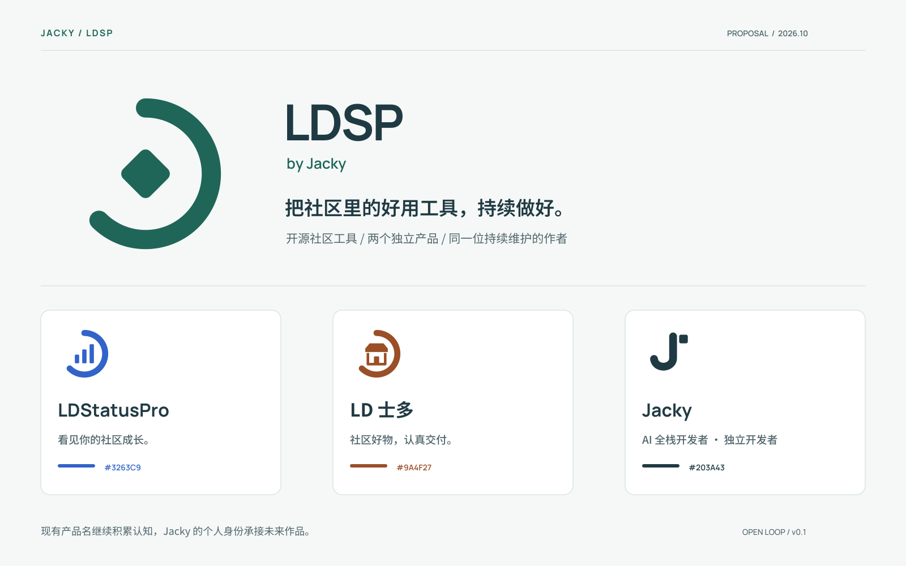
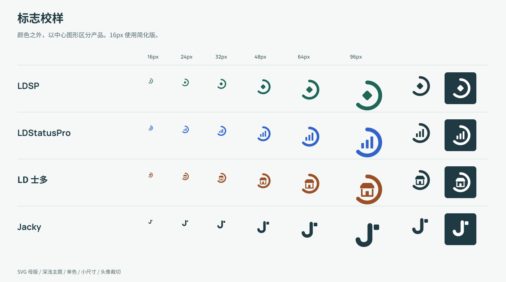

开源社区工具 · by Jacky
同一个作品系列，
各自清楚的产品。
保留现有认知，让图形、色彩与作者署名形成可持续使用的家族。

四套标志


社区阅读与成长助手


社区好物，认真交付。


AI 全栈开发者 · 独立开发者


网站与社交分享封面
小尺寸与单色校样

保留现有认知，让图形、色彩与作者署名形成可持续使用的家族。

开源社区工具 · by Jacky
社区阅读与成长助手
社区好物，认真交付。
AI 全栈开发者 · 独立开发者
